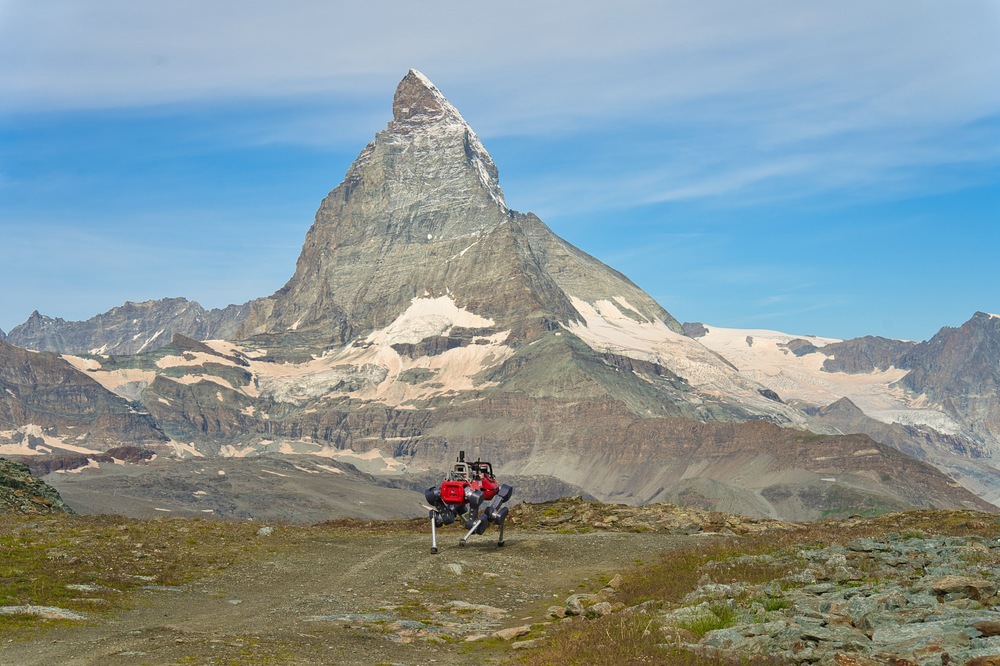

ROAM gives a four-legged robot the judgment of a vision-language model. The model looks through the robot's camera, says what is safe and what is risky, and reads warning signs; controllers learned in simulation turn that into where to walk and where to put each foot. In the Swiss Alps, the ANYmal robot hiked 10.1 km and 1,220 m down from Gornergrat to Furi near Zermatt with two interventions, and walked a 2.4 km loop around Seealpsee among cows and hikers.
T. Miki et al., "Bridging vision-language reasoning and learned control for legged navigation in the wild," Science Robotics (2026). doi:10.1126/scirobotics.aee1549 · arXiv · Project page · Video
Contact: Takahiro Miki, takahiro.miki1992@gmail.com
ETHチューリッヒ Robotic Systems Lab の三木崇弘らは、四脚ロボットに視覚言語モデル（VLM）の「常識」を持たせ、アルプスの登山道を自律で歩かせる技術「ROAM」を開発し、Science Robotics 誌に発表しました。VLMがカメラ画像を見て「何が安全で、何が危ないか、看板に何と書いてあるか」を判断し、シミュレーションで学習した制御が歩く場所と足の置き場所を決めます。ツェルマットではゴルナーグラートからフーリまで10.1 km・標高差1,220 mを下り（人の介入は工事区間での2回のみ）、アッペンツェルのゼーアルプ湖では牛やハイカーと同じ道を2.4 km歩きました。
論文：T. Miki ほか「Bridging vision-language reasoning and learned control for legged navigation in the wild」Science Robotics（2026）。doi:10.1126/scirobotics.aee1549 · arXiv · プロジェクトページ · 動画
連絡先：三木崇弘 takahiro.miki1992@gmail.com（日本語・英語で対応できます）
Download all photos (ZIP, 85 MB) Credit: Robotic Systems Lab, ETH Zurich
Originals (ZIP, 434 MB)Camera RAW, Sony ARW (ZIP, 329 MB)
Seealpsee, then Zermatt. Camera photos also link the untouched original and, for Zermatt, the camera RAW.